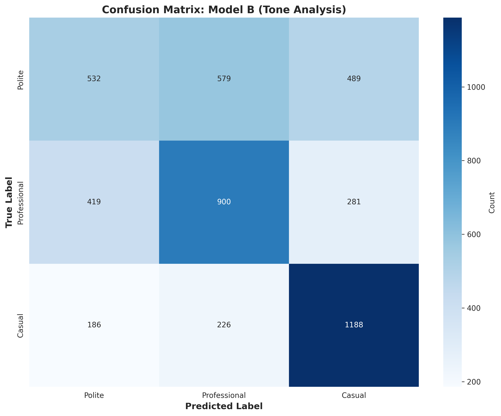
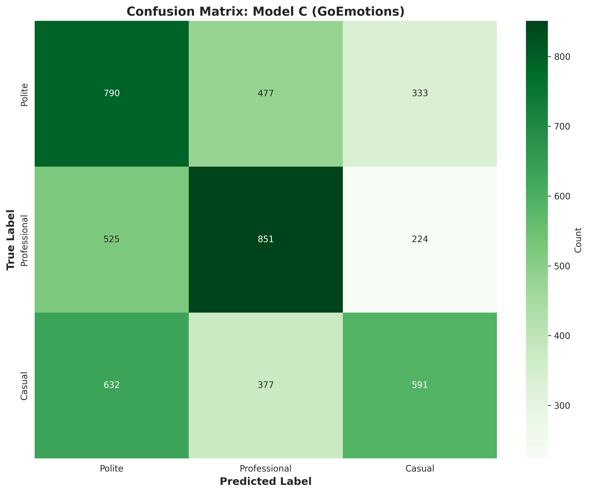

Problem in Human Terms
Tone datasets often use different labels. One dataset might say “apologetic,” another says “sad,” but both could map to a polite or professional tone. I built a pipeline that learns this translation automatically using a small calibration split, instead of hand‑coding rules.
What I Built
- Two BERT models trained on original labels (Tone Analysis, GoEmotions).
- A calibration‑set mapping step to align labels with Polite/Professional/Casual.
- Evaluation and error analysis with confusion matrices.
- Visuals that explain training dynamics and label imbalance.
- Dataset A: ground‑truth tone rewrites.
- Dataset B: 30 tone labels, 2,684 training samples.
- Dataset C: 28 emotion labels, 8,044 training samples.
- Greedy mapping optimized by macro F1 on calibration set.
Key Visuals


Why Model B Did Better
- Dataset B labels are closer to tone language than emotion labels.
- Dataset C is heavily imbalanced, which hurts generalization.
- More data didn’t help when the domain was misaligned.
What I Learned
- Small, well‑matched datasets can beat larger, misaligned ones.
- Calibration data can make cross‑label transfer practical.
- Visual diagnostics are essential to explain model behavior.
Reproducibility
Run end‑to‑end in a few commands:
python src/02_preprocess_data_v2.py
python src/04_run_training_v2.py
python src/10_evaluate_model_b.py
python src/11_evaluate_model_c.pyFull instructions are in `README.md`.